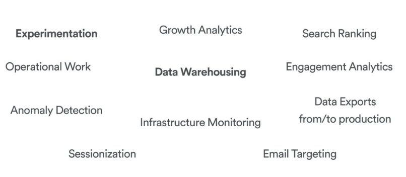
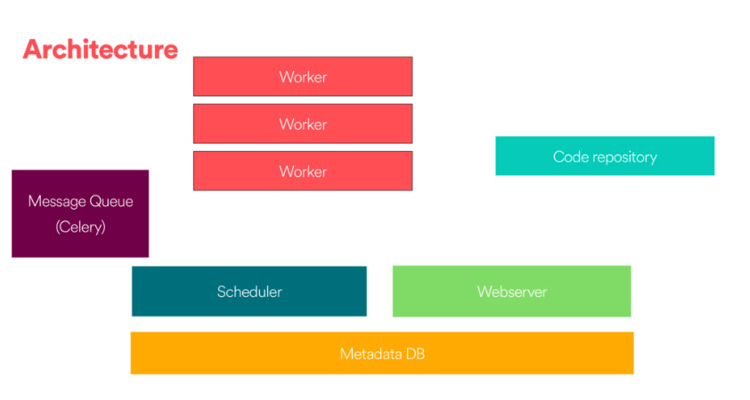

Airflow basics¶
What is Airflow?¶
 airflow logo
airflow logo
Airflow is a Workflow engine which means:
Manage scheduling and running jobs and data pipelines
Ensures jobs are ordered correctly based on dependencies
Manage the allocation of scarce resources
Provides mechanisms for tracking the state of jobs and recovering from failure
It is highly versatile and can be used across many many domains: 
Basic Airflow concepts¶
Task: a defined unit of work (these are called operators in Airflow)
Task instance: an individual run of a single task. Task instances also have an indicative state, which could be “running”, “success”, “failed”, “skipped”, “up for retry”, etc.
DAG: Directed acyclic graph, a set of tasks with explicit execution order, beginning, and end
DAG run: individual execution/run of a DAG
Debunking the DAG
The vertices and edges (the arrows linking the nodes) have an order and direction associated to them

each node in a DAG corresponds to a task, which in turn represents some sort of data processing. For example:
Node A could be the code for pulling data from an API, node B could be the code for anonymizing the data. Node B could be the code for checking that there are no duplicate records, and so on.
These ‘pipelines’ are acyclic since they need a point of completion.
Dependencies
Each of the vertices has a particular direction that shows the relationship between certain nodes. For example, we can only anonymize data once this has been pulled out from the API.
Idempotency¶
This is one of the most important characteristics of good ETL architectures.
When we say that something is idempotent it means it will produce the same result regardless of how many times this is run (i.e. the results are reproducible).
Reproducibility is particularly important in data-intensive environments as this ensures that the same inputs will always return the same outputs.
Airflow components¶

There are 4 main components to Apache Airflow:
Web server¶
The GUI. This is under the hood a Flask app where you can track the status of your jobs and read logs from a remote file store (e.g. Azure Blobstorage).
Scheduler¶
This component is responsible for scheduling jobs. This is a multithreaded Python process that uses the DAGb object to decide what tasks need to be run, when and where.
The task state is retrieved and updated from the database accordingly. The web server then uses these saved states to display job information.
Executor¶
The mechanism that gets the tasks done.
Metadata database¶
Powers how the other components interact
Stores the Airflow states
All processes read and write from here
Workflow as a code¶
One of the main advantages of using a workflow system like Airflow is that all is code, which makes your workflows maintainable, versionable, testable, and collaborative.
Thus your workflows become more explicit and maintainable (atomic tasks).
Not only your code is dynamic but also is your infrastructure.
Defining tasks¶
Tasks are defined based on the abstraction of Operators (see Airflow docs here) which represent a single idempotent task.
The best practice is to have atomic operators (i.e. can stand on their own and do not need to share resources among them).
You can choose among;
BashOperatorPythonOperatorEmailOperatorSimpleHttpOperatorMySqlOperator(and other DB)
Examples:
t1 = BashOperator(task_id='print_date',
bash_command='date,
dag=dag)
def print_context(ds, **kwargs):
pprint(kwargs)
print(ds)
return 'Whatever you return gets printed in the logs'
run_this = PythonOperator(
task_id='print_the_context',
provide_context=True,
python_callable=print_context,
dag=dag,
)
Comparing Luigi and Airflow¶
Luigi¶
Created at Spotify (named after the plumber)
Open sourced in late 2012
GNU make for data
Airflow¶
Airbnb data team
Open-sourced mud 2015
Apache incubator mid-2016
ETL pipelines
Similarities¶
Python open source projects for data pipelines
Integrate with a number of sources (databases, filesystems)
Tracking failure, retries, success
Ability to identify the dependencies and execution
Differences¶
Scheduler support: Airflow has built-in support using schedulers
Scalability: Airflow has had stability issues in the past
Web interfaces


| Airflow | Luigi |
| ———————————————— | —————————————————————————— |
| Task are defined bydag_id defined by user name | Task are defined by task name and parameters |
| Task retries based on definitions | Decide if a task is done via input/output |
| Task code to the worker | Workers started by Python file where the tasks are defined |
| Centralized scheduler (Celery spins up workers) | Centralized scheduler in charge of deduplication sending tasks (Tornado based) |